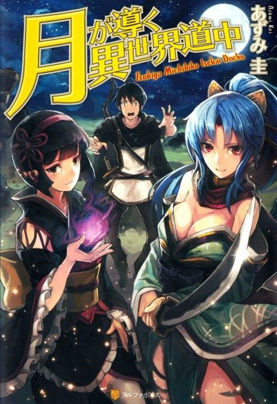

Anime
Anime
Light novelTSUKIMICHI -Moonlit Fantasy-
月が導く異世界道中
After the anime, read the light novel from Volume 11.
7.7AniList
—Animeter
37 ep2 seasons
Anime finished. Where does the story go next?
Start at Volume11
The last episode of Season 2 (37th overall) covers Light Novel Volume 10. Continue the story from Volume 11.
110ongoing
Season 2Start reading here